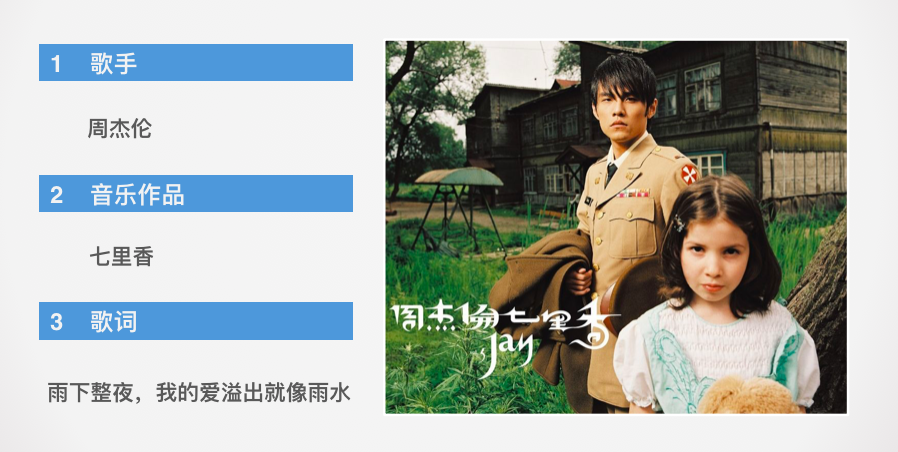
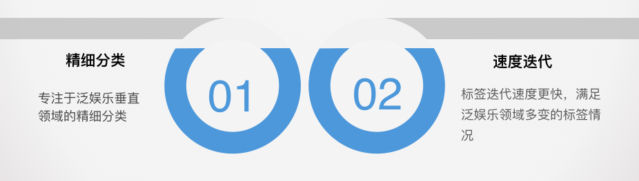

什么是智能文本分类系统
- 又称为中文标签化系统, 针对一段中文文本, 根据其内容, 打上一个或多个合适的标签的系统.
- 举个栗子:

- 举例文本:
"我最喜欢的歌手是周杰伦，因为他的七里香很好听，雨下整夜，我的爱溢出就像雨水。"
- 文本标签:
"音乐"
系统的重要性
- 从系统本身角度: 系统内包含很多NLP基础任务的处理，比如分词任务，命名实体识别任务等，又是机器翻译，文本生成工作的基础。因此，智能文本分类任务是学习NLP的必经之路。
- 从职业发展角度: 对文本分类技术的要求都是普遍存在的，也是你将来在职场杀戮的有力武器。如果大家能够认真学习从而精通这样一个系统，在市面上找到一份相关的工作还是非常容易的。
系统的应用场景
- 这是一款公司内部使用的产品，支持个性化推荐系统, 商品画像等.
- 以个性化推荐系统为例, 基于用户的兴趣爱好进行推荐, 需要根据用户行为日志打上一个或多个标签, 通过标签匹配, 来完成基于兴趣的推荐工作.
自主构建系统的优势
- 我们这里更专注于泛娱乐垂直领域的精细分类, 更好的把握该领域的用户需求。
- 标签迭代速度更快，满足泛娱乐领域多变的标签情况。

篇章目录简介
- 第一章: 整体系统搭建
- 主要讲解搭建系统的服务框架，以及实现该系统的核心步骤。
- 第二章: 构建标签词汇图谱
- 主要构建用于查询的知识图谱，这张图谱会被第一章中提及的某一个核心步骤所调用。
- 第三章: 特征工程与fasttext模型训练
- 主要讲解AI模型的训练过程，体现智能文本分类的“智能”，也是我们整个项目的重中之重，最后封装的模型也会被第一章中提及的某一个核心步骤所调用。
- 第四章: 多模型训练与预测
- 主要对模型训练和预测部分的优化，主要讲如何有效利用CPU资源，快速进行多模型训练。和利用多线程提升预测性能要求。
- 第五章: 系统联调与测试
- 主要将我们系统的各个部分都连接起来，并测试运行，完成最后一段旅程。